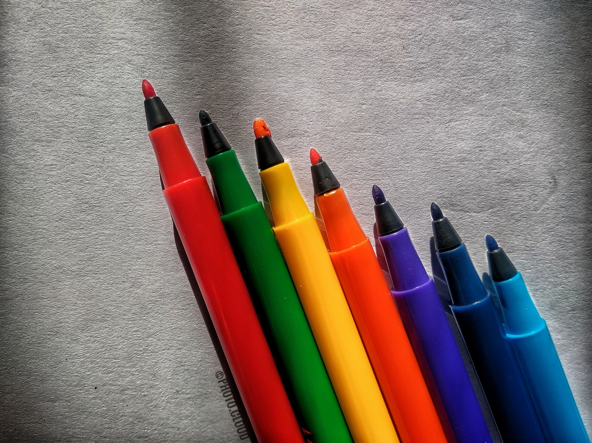
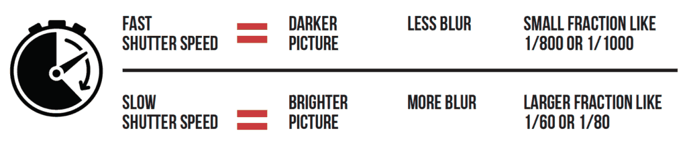
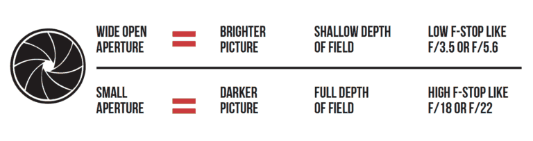
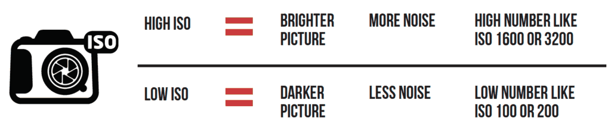

Photography Basics:Complete beginner's Guide
Photography isn’t the only way to capture the world, but it certainly is one of the most effective. Look no further than the nearest social media feed, news station, magazine article, or book cover to see it – photographs have power. If you want to harness that power and learn how to take the best possible photos, welcome to “Photography Basics: Complete Beginner’s Guide.” This comprehensive tutorial explains the fundamental concepts you should know about photography from start to finish
Why We Wrote “Photography Basics”
Where would you go if you wanted to learn the most important basics of photography, starting from scratch?
Today, many people today like learning about photography online, which is a great way to search through large
amounts of information (and carry a reference in your pocket). But as good as the internet is for answering
questions, it’s not always geared toward studying a large topic from start to finish.

Where to begin
Photography Basics is like a book, and it reads from front to back. Each chapter of the guide builds on prior chapters. If you start at the very beginning and work your way through, the information will flow naturally and in the right order. However, if you want to learn something more specific, you’re welcome to skip ahead to a later chapter. Here is the overall organization of the guide:
What is Photography??
Photography is the art of capturing light with a camera, usually via a digital sensor or film, to create an
image. With the right camera equipment, you can even photograph wavelengths of light invisible to the human eye,
including UV, infrared, and radio.
The first permanent photograph was captured in 1826 (some sources say 1827) by Joseph Nicéphore Niépce in
France. It shows the roof of a building lit by the sun. You can see it reproduced below:
“View from the Window at Le Gras” by Joseph Nicéphore Niépce"
At the beginner level you all need only a Dslr camera with kit-lens,at this level you will learn the basic fundamentals of photography like Handling, Framing, Color composition, Basic rules of capturing a moment,Light etc

At intermediate Point, What Other Camera Gear and Accessories Do You Need?
Camera: If you buy a dedicated camera (rather than a phone), pick one with interchangeable lenses so that you can try out different types of photography more easily. Read reviews, but don’t obsess over them, because everything available today is pretty much equally good as its competition. Find a nice deal and move on.
Lenses: This is where it counts. For everyday photography, start with a standard zoom lens like a 24-70mm or 18-55mm. For portrait photography, pick a prime lens (one that doesn’t zoom) at 35mm, 50mm, or 85mm. For sports, go with a telephoto lens. For macro photography, get a dedicated macro lens. And so on. Lenses matter more than any other piece of equipment because they determine what photos you can take in the first place.
Post Processing Software: One way or another, you need to edit your photos. It’s ok to start with software already on your computer, or software that comes with your camera. But in the long run, a dedicated program will do a better job. Adobe sells Lightroom and Photoshop as a bundle for $10/month, or you can buy standalone software from another company if you prefer; there are tons of options. Whatever you pick, stick with it for a while, and you’ll learn it quite well.
Everything else is optional, but can be very helpful:
1.Tripod
2.Bags
3.Memory cards
Choose something in the 32-64 GB range to start. Get a fast card (measured in MB/second) if you shoot bursts of photos, since your camera’s memory will clear faster.
4.Extra batteries
Get at least one spare battery to start, preferably two. Off-brand batteries are usually cheaper, although they may not last as long or maintain compatibility with future cameras.
5.Polarizing filters
6.Flash
7.Cleaning kit
The Three Fundamental Camera Settings You Should Know
Your camera has dozens of buttons and menu options. If you pick the wrong camera settings, it’s
possible that your photo won’t turn out the way you want. How do you make sense of all these options? And how do
you do it quickly in the field?
It’s not easy, but it’s easier than you might think. In fact, most of the menu options are things you’ll only
set one time, then rarely or never touch again. Only a handful of settings need to be changed frequently, and
that’s what the rest of this Photography Basics guide covers.
The three most important settings are called shutter speed, aperture, and ISO. All three of them control the
brightness of your photo, although they do so in different ways. In other words, each brings its own “side
effects” to an image. So, it’s a bit of an art to know exactly how to balance all three for a given photo.

1.Shutter speed:
The amount of time your camera sensor is exposed to the world while taking a picture. Learn more>>>
2.Aperture
Represents a “pupil” in your lens that can open and close to let in different amounts of light. Learn more>>>
3.ISO
Technically a bit more complex, but similar to the sensitivity of film for taking pictures in different lighting conditions. Learn more>>>
The First Steps on Your Photographic Journey
In photography, the technical and the creative go hand in hand.
Remember the Ansel Adams quote from earlier? There is nothing worse than a sharp image of a fuzzy concept. If
the idea behind a photo is weak, using the right camera settings won’t make it better.
At the same time, camera settings are some of the most important tools you have at your disposal. In a way,
every technical choice is really an artistic choice in disguise. These settings are worth learning. Your
understanding of photography will improve tenfold when you understand how camera settings work.